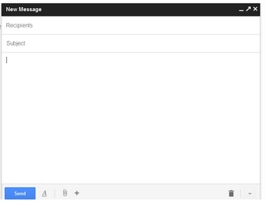

1. Introducción

En la práctica tomaremos contacto con el correo electrónico. Espero que os guste ya que es una herramienta fundamental que utilizaremos asiduamente a lo largo de lo que nos queda de curso.
2. Acceder al correo electrónico
Para acceder al correo electrónico por primera vez sigue estos pasos:
- Abre un explorador.
- Accede a la dirección: http://gmail.uji.es
- Utiliza tu nombre de usuario y contraseña para entrar.
3. Bandeja de entrada

Observa la bandeja de entrada, que es la pantalla principal que nos aparecerá al acceder al correo.
- ¿Tienes mensajes? ¿Quién los envía?
- ¿Sabrías leer uno de los correos y volver otra vez a la pantalla de la bandeja de entrada?>
4. Componer un mensaje
Os voy a enviar un correo a todo el mundo, al que quiero que respondáis, así enviaremos nuestro primer mensaje.
- Accede a la bandeja de entrada y comprueba que tienes un nuevo correo mío.
- Pulsa sobre el botón de responder.
- Escribe algo en la respuesta, y pulsa el botón de "enviar".
5. Enviar y leer correo
Si has conseguido realizar los puntos anteriores, envía y comprueba el correo a alguno/a de tus compañeros/as. Ya puedes solicitar el correo de familiares y amigos para enviarles correo también. ¡Es así de fácil!.